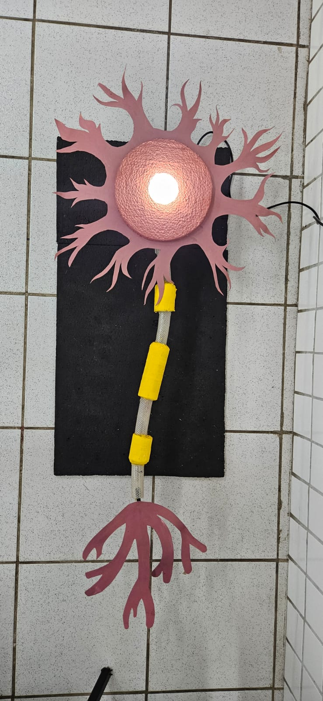
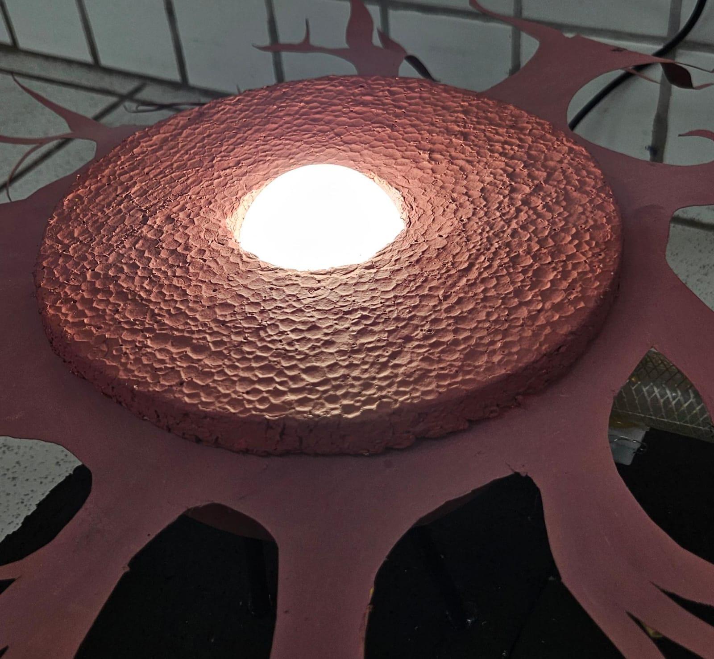
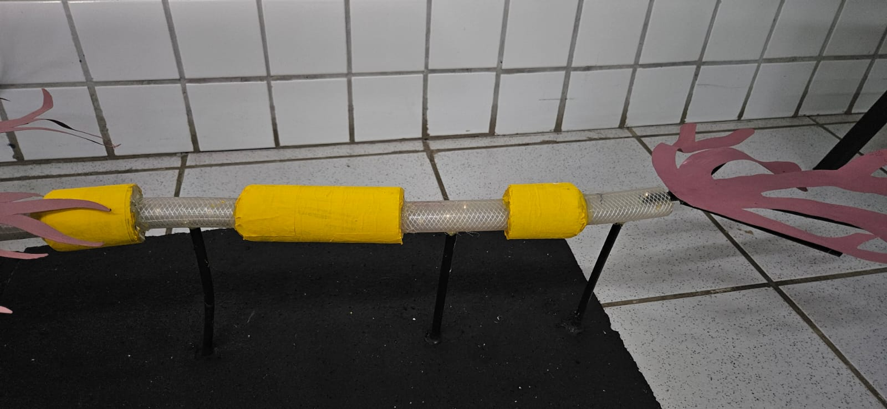

O que são Neurônios?
Neurônios são as células do sistema nervoso que transmitem informações pelo corpo. Eles são responsáveis pelos pensamentos, movimentos, emoções e sentidos.
Estrutura do Neurônio
Os neurônios possuem três partes principais:
- Dendritos: Recebem sinais de outros neurônios.
- Corpo Celular (Soma): Onde ficam o núcleo e outras partes importantes para processar informações. 
- Axônio: Transmite os sinais para outros neurônios ou células. 

Como os Neurônios se Comunicam?
Os neurônios se comunicam através de sinais elétricos e químicos. Esse processo acontece nas sinapses, onde neurotransmissores transmitem mensagens entre as células.
Importância dos Neurônios
Neurônios controlam funções vitais como respirar, pensar e reagir. Problemas nos neurônios podem causar doenças como Alzheimer ou Parkinson.